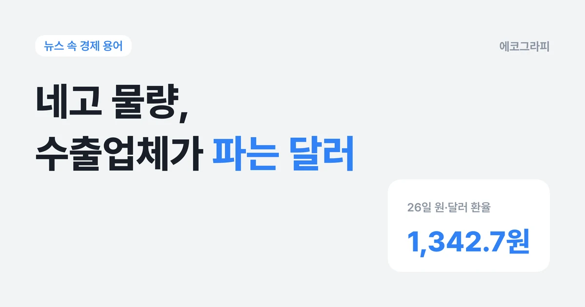
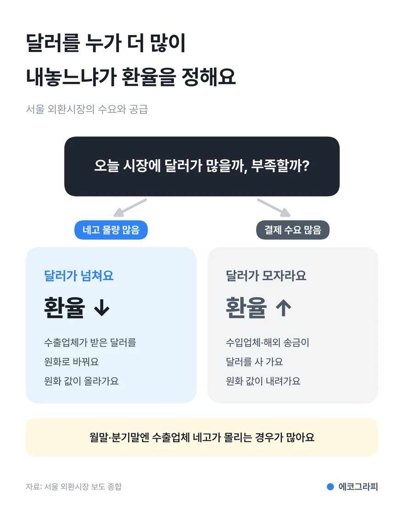
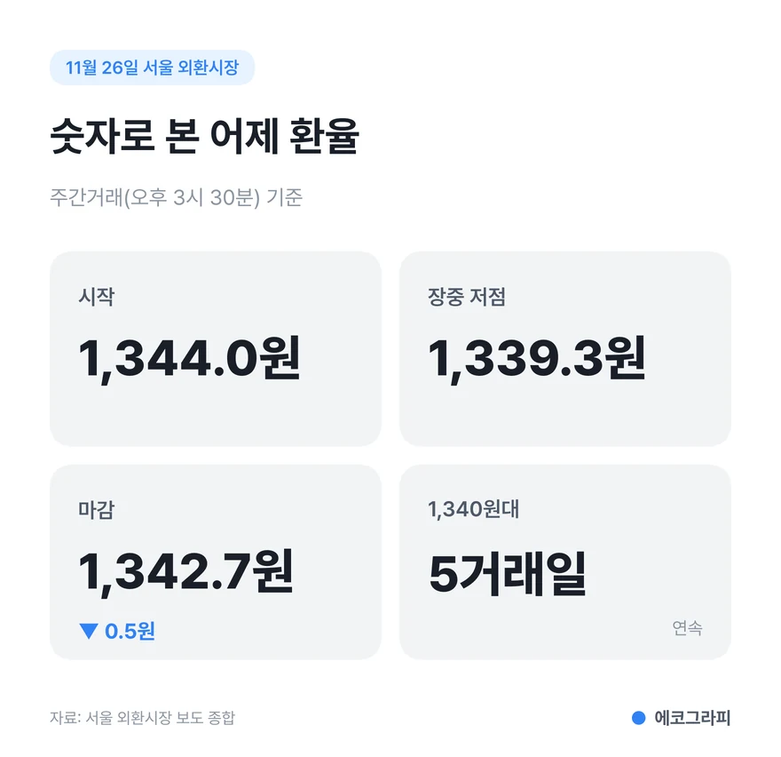
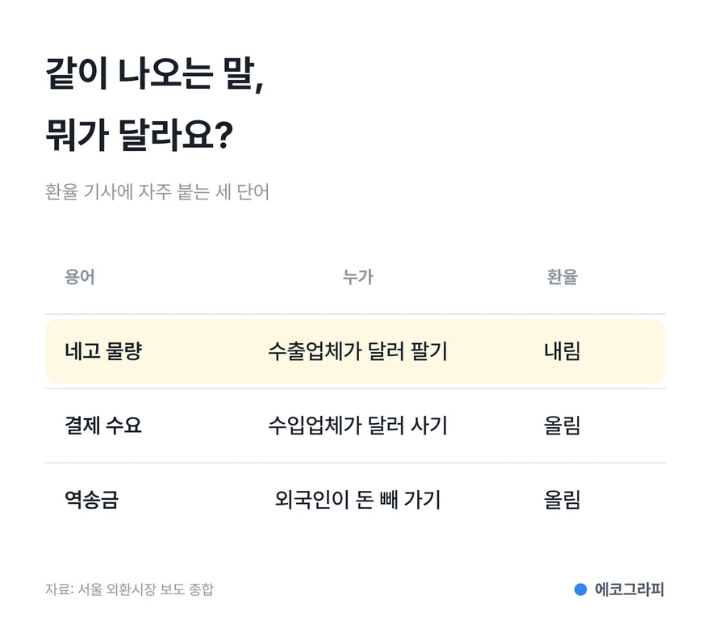
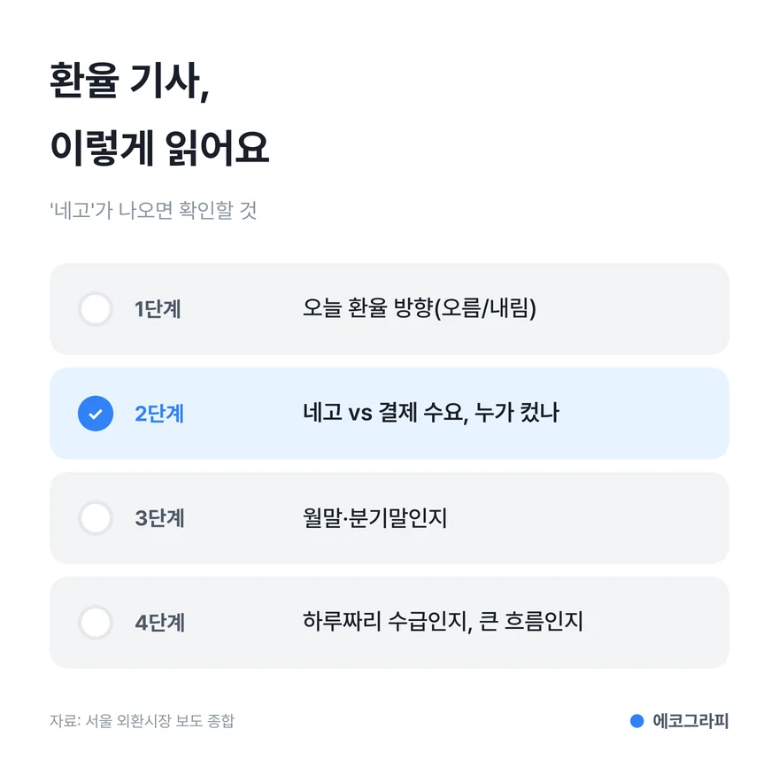

어제 환율 마감 기사엔 "월말 수출업체 네고 물량이 나오며 환율이 하락했다"는 문장이 빠지지 않았어요. 한국은행이 금리를 올린 날이기도 했는데, 환율은 0.5원 내린 1,342.7원으로 마쳐 크게 움직이진 않았어요. 어제 시장 전체 흐름은 오늘 아침 시황에 정리했어요.
네고 물량: 수출 기업이 물건값으로 받은 달러를 원화로 바꾸려고 외환시장에 내놓는 달러 매도 물량이에요. '네고'는 수출 대금을 은행에서 원화로 바꾸는 절차(Negotiation)에서 온 말이에요.
환율도 결국 '가격'이에요. 시장에 달러를 팔려는 사람이 많으면 달러 값(환율)이 내려가고, 사려는 사람이 많으면 올라가요. 수출 기업은 직원 월급, 협력사 대금 같은 원화 비용을 내야 하니 번 달러를 정기적으로 팔아요. 그래서 월말·분기말처럼 결제가 몰리는 때에 네고 물량이 많이 나오는 경우가 많아요.

수출 기업이 달러를 바로 팔지 않고 쥐고 있으면 반대 효과가 나요. 환율이 더 오를 거라고 보면 파는 시점을 늦추는데, 이렇게 팔지 않고 기다리는 걸 기사에서는 '네고를 미룬다', '달러를 쌓아 둔다'고 표현해요.

26일 환율은 1,344.0원에서 출발해 오전 중 1,339.3원까지 내려갔어요. 이후 낙폭을 줄여 1,342.7원으로 마감했어요. 내려가는 힘으로는 월말 네고와 금리 인상이, 올라가는 힘으로는 외국인 배당금 송금 같은 달러 수요가 꼽혔어요. 두 힘이 비슷해서 5거래일째 1,340원대에 머무른 거예요.
확인할 것: 환율 기사에서 '네고'를 보면 오늘이 월말인지부터 확인하세요. 월말 네고는 흔한 일이라 그것만으로 큰 흐름이 바뀌었다고 보긴 어려워요.


결제 수요는 네고의 반대예요. 원유·원자재를 수입하는 기업이 물건값을 내려고 달러를 사는 거예요. 역송금은 외국인 투자자가 한국에서 받은 배당금이나 주식 판 돈을 달러로 바꿔 본국으로 보내는 걸 말해요. 연말·연초 배당 시즌에 자주 나와요. 셋 다 환율을 하루 이틀 움직이는 '수급' 요인이고, 큰 흐름은 금리·경기·달러 강약이 정해요.
아니에요. 같은 날 결제 수요나 외국인 주식 매도가 더 크면 환율은 오를 수도 있어요. 네고는 여러 힘 중 하나예요.
기업들이 월말에 월급·대금 같은 원화 지출이 몰리기 때문이에요. 그래서 '월말 네고'라는 말이 자주 붙어요.
보통은 아니에요. 네고는 수출 기업의 달러 매도를 가리키는 말이고, 개인이 환전하는 건 규모가 작아 따로 부르지 않아요.
다른 조건이 같다면 원화 예금의 매력이 커져 원화가 강해지기 쉬워요. 다만 미국 금리도 함께 오르면 효과가 줄어들어요.
※ 2026년 11월 기준으로 정리한 글입니다. 세율·제도는 바뀔 수 있으니 거래 전 증권사·국세청 안내를 한 번 더 확인하세요. 특정 종목·상품의 매수·매도 권유가 아닙니다.